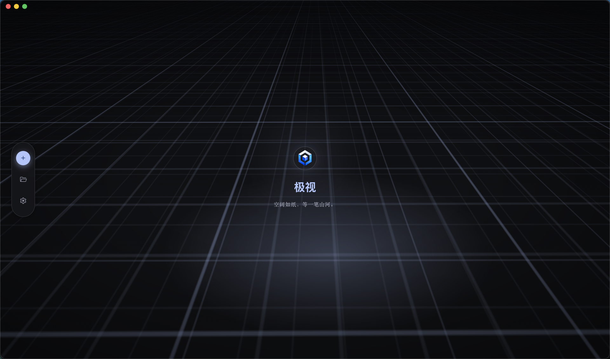
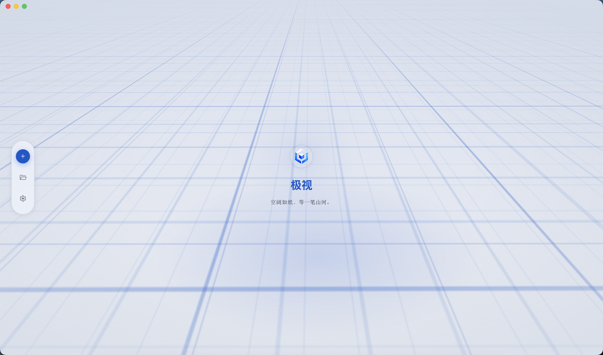

Interactive viewing
Orbit, zoom, and frame models with smooth camera controls.
极视
See every dimension.
A lightweight 3D model viewer for macOS. Open glTF and GLB files and inspect them in seconds.
Blank as paper—awaiting the stroke of mountains.


Orbit, zoom, and frame models with smooth camera controls.
Open a single model or an entire folder, then switch between files in the sidebar.
Open from Finder, use the menu bar, and rely on familiar keyboard shortcuts.
Export a transparent PNG from the current view — preview, pan/zoom, then save via the native dialog.
Download the DMG, drag Trivor to Applications, then launch it from Launchpad or Finder.
Trivor isn't on the App Store yet. Try opening it once, then go to System Settings → Privacy & Security, scroll down, and click Open Anyway for Trivor. It should launch normally from Applications afterward.
glTF and GLB — the standard formats for real-time 3D content.
macOS 13 Ventura or later, on Apple Silicon or Intel.